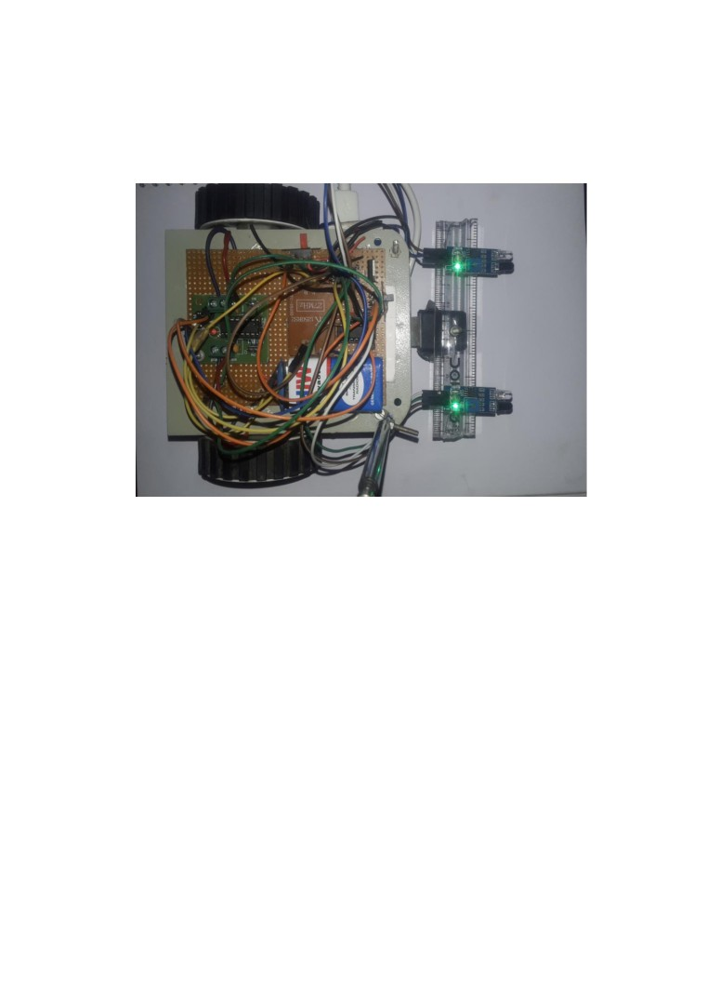
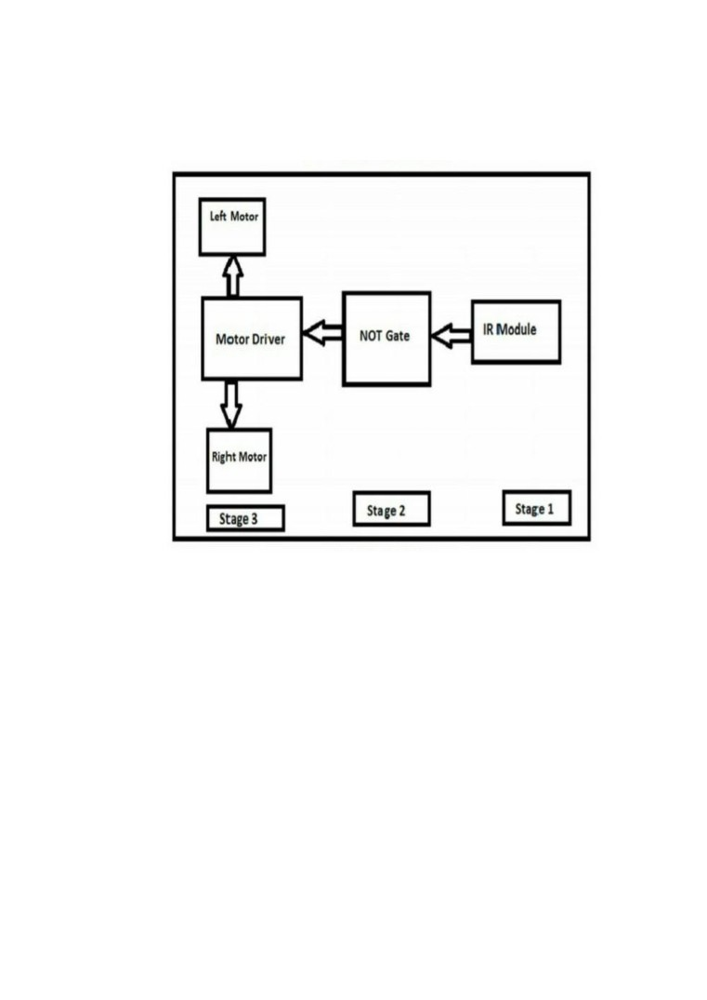
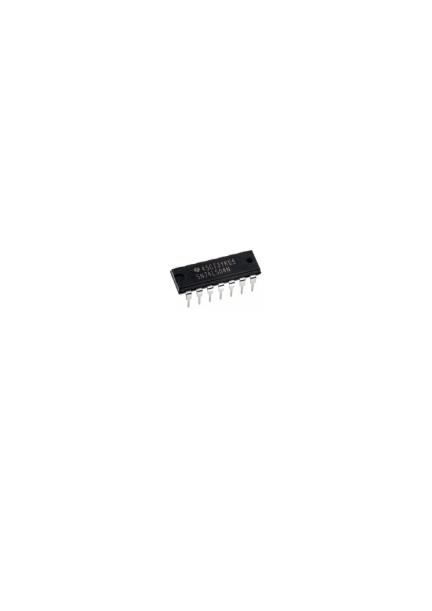
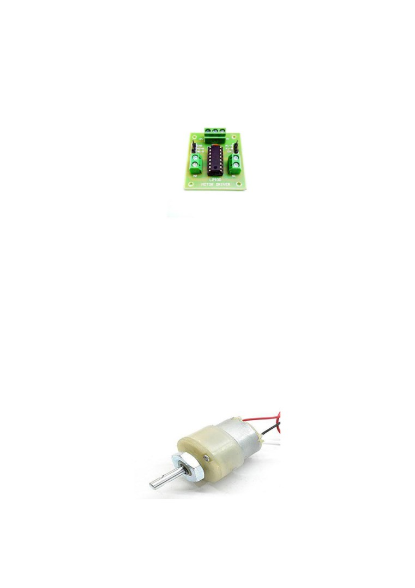
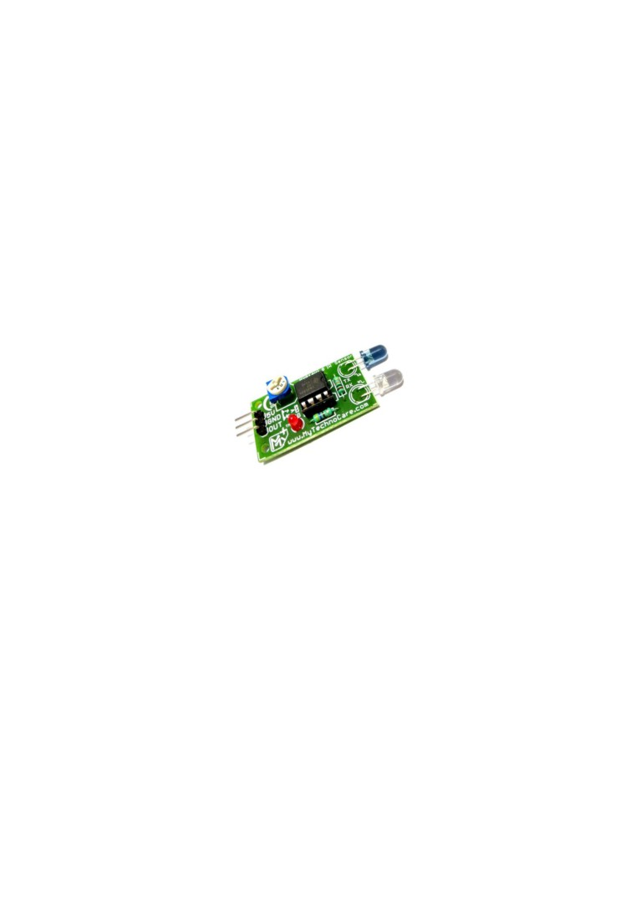
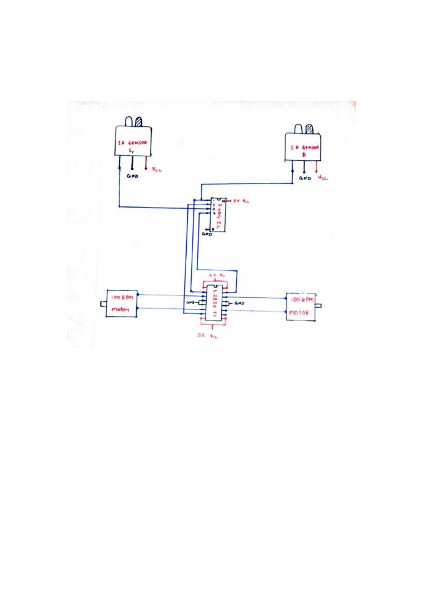
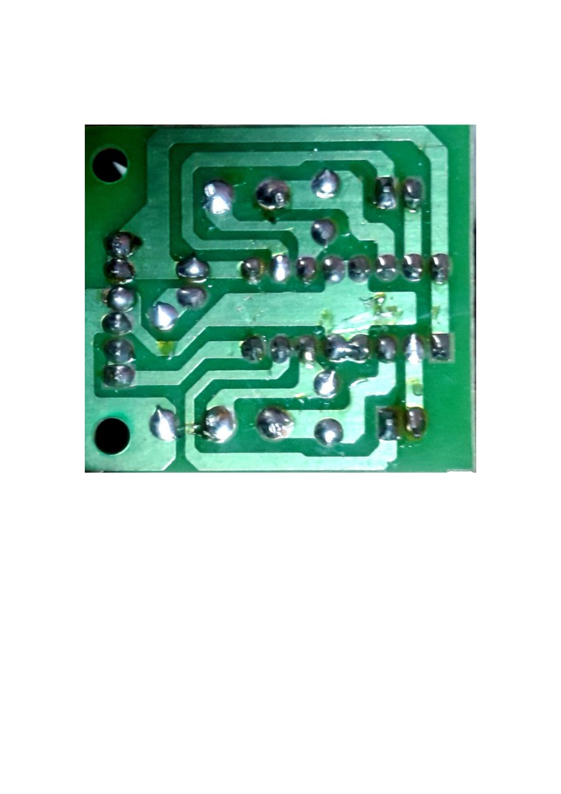
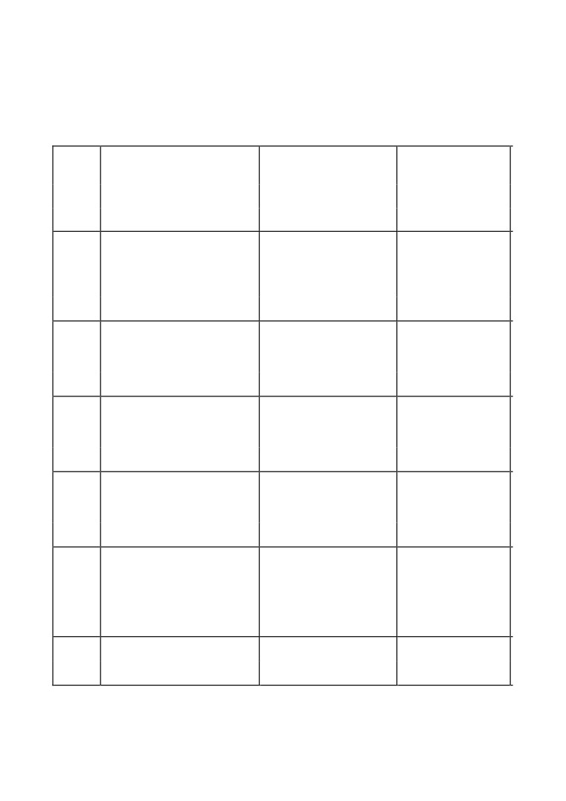
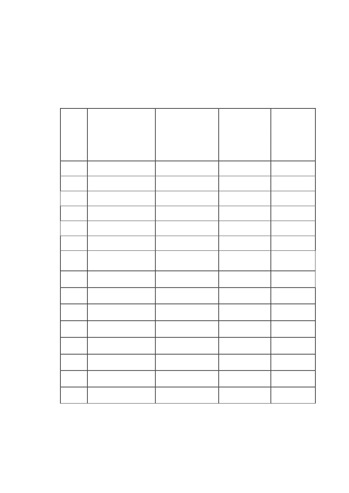

Contents
List of Abbreviation…………………………………………………. iii
List of Figures……………………………………………………….. iv
Photograph of the Project…………………………………………
v
Abstract……………………………………………………………
vi
Chapter 1: Introduction……………………………………………….1
1.1
Objective……………………………………………..2
1.2
Introduction to ROBOTICS.………………….……...3
Chapter 2: Block Diagram……….. …………………………………..4
2.1
Block Diagram……………………………………….5
2.2
Block Diagram Description…………………………..9
Chapter 3: Circuit Details…………………………………………
10
3.1 Circuit Diagram….……………………………………..11
3.2 PCB Diagram…………………………………………..12
Chapter 4: Working…………………………………………………..13
4.1
Working……………………………………………..14
Chapter 5: Components Required……………………………………16
Chapter 6: Result and Conclusion………………………………….…17
6.1
Result………………………………………………...18
6.2
Conclusion…………………………………………...19
Chapter 7: Bill of Materials…………………………………………
21
Chapter 8: Advantage and Future Scope……………………………
22
8.1
Advantages………………………………………….23
8.2
Future Scope………………………………………...24
Chapter 9: Reference………………………………………….……
26
List of Abbreviations
DC
-
Direct Current
I.C.
-
Integrated Circuit
IR
-
Infra Red
L.E.D.
-
Light Emitting Diode
PIR
-
Passive Infra Red
RF
-
Radio Frequency
LIST OF FIGURES
Figure 2.1 Block diagram
5
Figure 2.2.1 7404 IC
7
Figure 2.2.2 L293D Motor Driver
8
Figure 2.2.3 DC Gear motor
8
Figure 2.2.4 IR Sensor
9
Figure 3.1 Circuit Diagram
11
Figure 3.2 PCB Diagram
12

Photograph Of The Project
ABSTRACT
An obstacle avoiding robot is an intelligent device, which can automatically
sense and overcome obstacles on its path and protect the robot from any
physical damages. IR module is used to avoid the obstacle if obstacle comes
on the front of the IR module.
INTRODUCTION
1.1 OBJECTIVE
Obstacle avoidance is one of the most important aspects of mobile robotics.
Without it robot movement would be very restrictive and fragile. Obstacle
Avoiding is a task which is used for detecting the objects placed in the path
of the robot or any vehicle.
Basically it's in the form of a moving vehicle which is able to detect and
avoid potential obstacles on its path and change its direction appropriately
so that its motion stays uninterrupted.
The idea is simple and works without microcontroller . That means we can
make it without any kind of coding and the circuit allows us to use any DC
motor regardless of its power, so even high power obstacle avoiding
vehicles could be made using this circuit which are normally used in malls
and similar retail outlets.
1.2 INTRODUCTION TO ROBOTICS
Robotics is a part of todays communication. In today’s world
ROBOTICS is fast growing and interesting field . It is simplest way for
latest technology modification. Now a days communication is part of
advancement of technology , so we decided to work on ROBOTICS field ,
and design something which will make human life simpler in day today
aspect . Thus we are supporting this cause.
This project is basic stage of any automatic robot. This ROBOT has
sufficient intelligence to cover the maximum area of provided space . It has
two infrared sensors which are used to sense the obstacles coming in
between the path of ROBOT . It will move in a particular direction and
avoid the obstacle which is coming in its path .
We have used two DC motors to give motion to the ROBOT . The
constrction of the ROBOT circuit is easy and small . The electronics parts
used in the ROBOT circuits are easily available and cheap too.

2.1 BLOCK DIAGRAM
Fig:2.1 Block diagram
2.2 BLOCK DIAGRAM DESCRIPTION:
• IR Module
It consists of IR Led, photo diode, resistors, 10K potentiometer ,
LM358IC
1)IR Led: IR Led emits light, in the range of Infrared frequency. IR
light is invisible to us as its wavelength (700nm - 1mm) is much
higher than the visible light range. Everything which produce heat,
emits infrared like for example our human body. Infrared have the
same properties as visible light, like it can be focused, reflected and
polarised like visible light.
2)Photo Diode: Photodiode is considered as Light dependent
Resistor (LDR), means it has very High resistance in absence of
light and become low when light falls on it. Photodiode is a
semiconductor which has a P-N junction, operated in Reverse Bias,
means it start conducting the current in reverse direction when
Light falls on it, and the amount of current flow is proportional to
the amount of Light. This property makes it useful for IR
detection.
3)10 K Potentiometer: A potentiometer, informally a pot, is a
three-terminal resistor with a sliding or rotating contact that forms
an adjustable voltage divider. If only two terminals are used, one
end and the wiper, it acts as a variable resistor or rheostat.
4) LM358 IC: LM358 is an operational amplifier (Op-Amp) and in
this circuit we are using it as a voltage comparator. The LM358 has
two independent voltage comparators inside it, which can be
powered by single PIN, so we can use the single IC to build two
IR sensor modules. We have used only one comparator here,
which have inputs at PIN 2 & 3 and output at PIN 1. Voltage
comparator has two inputs, one is inverting input and second is

non-inverting input (PIN 2 and 3 in LM358). When voltage at
non-inverting input (+) is higher than the voltage at inverting
input (-), then the output of comparator (PIN 1) is High. And if
the voltage of inverting input (-) is higher than non-inverting end
(+), then output is LOW.
• IC 7404
7404 is a NOT gate IC. It consists of six inverters which perform
logical invert action. The output of an inverter is the complement
of its input logic state, i.e., when input is high its output is low and
vice versa.
Fig:2.2.1 7404 IC
• L293D IC
L293D is a dual H-bridge motor driver integrated circuit (IC).
Motor drivers act as current amplifiers since they take a
low-current control signal and provide a higher-current signal. To
drive the motors this higher current signal is used. L293D contains
two inbuilt H-bridge driver circuits. In its common mode of
operation, two DC motors can be driven simultaneously, both in
forward and reverse direction. The motor operations of two
motors can be controlled by input logic at pins 2 & 7 and 10 & 15.
Input logic 00 or 11 will stop the corresponding motor. Logic 01
and 10 will rotate it in clockwise and anticlockwise directions,
respectively. Enable pins 1 and 9 (corresponding to the two

motors) must be high for motors to start operating. When an
enable input is high, the associated driver gets enabled. As a result,
the outputs become active and work in phase with their inputs.
Similarly, when the enable input is low, that driver is disabled, and
their outputs are off and in the high-impedance state.
Fig:2.2.2 L293D Motor Driver
• DC GEAR MOTOR
Geared DC motors can be defined as an extension of DC motor.
A geared DC Motor has a gear assembly attached to the motor.
The speed of motor is counted in terms of rotations of the shaft
per minute and is termed as RPM .The gear assembly helps in
increasing the torque and reducing the speed. Using the correct
combination of gears in a gear motor, its speed can be reduced to
any desirable figure. This concept where gears reduce the speed of
the vehicle but increase its torque is known as gear reduction.
Fig:2.2.3 DC Gear Motor

• IR SENSORS
Infrared sensors detect the object's distance with infrared
radiation. When the beam detects an object, the light beam returns
to the receiver with an angle after reflection. The is method of
triangulation. PIR sensors are also known as Pyroelectric Infrared
sensor, Passive Infrared sensor or IR motion sensor, which detect
the difference in temperature, thermal radiation, human body or
an animal . PIR sensor operates with the radiation of body heat .
The hotter the detected object, there will be more emission occurs
in PIR sensor.
Fig:2.2.4 IR Sensor
Chapter 3
Circuit Details

3.1 CIRCUIT DIAGRAM:
Fig:3.1 Circuit diagram

3.2 PCB DIAGRAM:
Fig:3.2 PCB diagram
4.1 WORKING
In IR Module we have used IR LED as a transmitter and Photo
Diode as a receiver. It is used to detect the obstacle if obstacle
comes on the front of the IR module. Here we have used NOT
Gate as an inverter. The signal coming out from IR module is
inverted by NOT Gate and the inverting signal is sent to the
motor driver ic L293D. Robot take the left or right or the forward
movement in according to the sensing signal with the help of the
two gear motor which makes the movement of the robot .
IR module is used to detect the obstacle if obstacle comes on the
front of the IR module. The IR module send the signal to the 7404
IC or Not Gate IC. Here 7404 IC is used as an inverter. The signal
coming out from IR module is inverted by 7404 IC and the
inverting signal is sent to the motor driver IC L293D. Robot take
the left or right or the forward movement in according to the
sensing signal with the help of the two gear motor which makes
the movement of the robot smooth.
Chapter 5
Components Required

Table 5.1 Components Required
S.NO
NAME OF THE
DESCRIPTION
QUANTITY
COMPONENT
Contains infrared transmitter
and receiver with one output
pin and a preset trough
1.
IR Sensor
which we can set sensitivity .
2
12 volt geared DC motor
which takes 100 revolutions
2.
100 rpm Motor
in one minute .
2
It is a motor controller IC
with four input pins and four
3.
L293D IC
output pins .
1
It is a NOT gate IC which
inverts the input and give it as
4.
7404 IC
output .
1
Comes with radio frequency
transmitter and receiver with
an operating frequency of 27
5.
RF Module
MHz .
1
6.
Connecting Wires
Insulated copper wires
Many
Chapter 6
Result and Conclusion
6.1 RESULT
From this study, a walking robot that achieved the stated
objectives had been developed. This robot is able to produce
the basic walking movements using two gear motors. We
developed the robot with a very good intelligence which is
easily capable to sense the obstacle and by processing the
signal coming from the sensor, it is perfectly avoiding the
obstacle coming in between the path Robot take the left or
right or the forward movement in according to the sensing
signal with the help of the two gear motor which makes the
movement of the robot smooth .In future, the sensing range
can be increased by increasing the sensor quality with the
help of ultrasonic sensor or the IR signal spread all over the
provide area.
6.2 CONCLUSION
Almost all navigation robot demands the some sort of obstacle
detection, hence obstacle avoidance strategy is of most
importance. Obstacle Avoidance Robot has a vast field of
application. They can be used as services robots, for the
purpose of household work and so many other indoor
applications. Equally they have great importance in scientific
exploration and emergency rescue, there may be places that are
dangerous for humans or even impossible for humans to reach
directly, then we should use robots to help us. In those
challenging environments, the robots need to gather
information about their surroundings to avoid obstacles.
Nowadays, even in ordinary environments, people require that
robots to detect and avoid obstacles. For example, an industrial
robot in a factory is expected to avoid workers so that it won’t
hurt them. In conclusion, obstacle avoidance is widely
researched and applied in the world, and it is probable that
most robots in the future should have obstacle avoidance
function.
Chapter 7
Bill of Material

7. Bill of Material
Table 7.1 Bill of Material
S.NO NAME OF THE
PRICE PER
QUANTITY
TOTAL
COMPONENT
COMPONENT
PRICE
1.
IR Sensor
50
2
100
2.
100 rpm motor
150
2
300
3.
L293D IC
150
1
150
4.
7404 IC
20
1
20
5.
7805 IC
15
1
15
6.
RF Module
150
1
150
7.
RF Antenna
50
1
50
8.
Robot Chassis
120
1
150
9.
IC Base
30
1
30
10.
Balancing Wheel
50
1
50
11.
Connecting wires
2
16
32
12.
Battery
20
2
40
13.
Wheel
30
2
60
14.
Zero PCB
50
1
50
15.
Screw
5
4
20
Grand Total = Rs. 1,217
Chapter 8
Advantages and Future Scope
8.1 ADVANTAGES
• It has application in driverless car
• It can be used as Military application. The military
applications include reconnaissance , surveillance , battle
damage assessment and communications .
• It has future application in metros .
• It can be used for cleaning purpose after further
modification .
8.2 FUTURE SCOPE
In future, the sensing range can be increased by increasing the
sensor quality with the help of ultrasonic sensor or the IR signal
spread all over the provide area.
Performance of this robot can be improved with the help of Bump
sensors, for slow moving robots, ultrasonic range sensors for large
range up to 6m or LASER range finders.
One of the prevailing fields is the use of camera in robot,
Computer vision can be implemented for better performance.
9.1 REFERENCE
• “Obstacle Avoidance Robot” by K. Bhagt, S. Deshmukh,
S. Dhonde, S. Ghag, V. Waghmare
• “OBSTACLE AVOIDING ROBOT - A PROMISING
ONE” by R. Chandra Kumar, Md. S. Khan, D. Kumar, R.
Birua, S. Mondal, M. Kr. Parai
• “Obstacle Avoidance Robotic Vehicle Using Ultrasonic
Sensor, Android And Bluetooth For Obstacle Detection” by
V. Ankit, P. Jigar, V. Savan